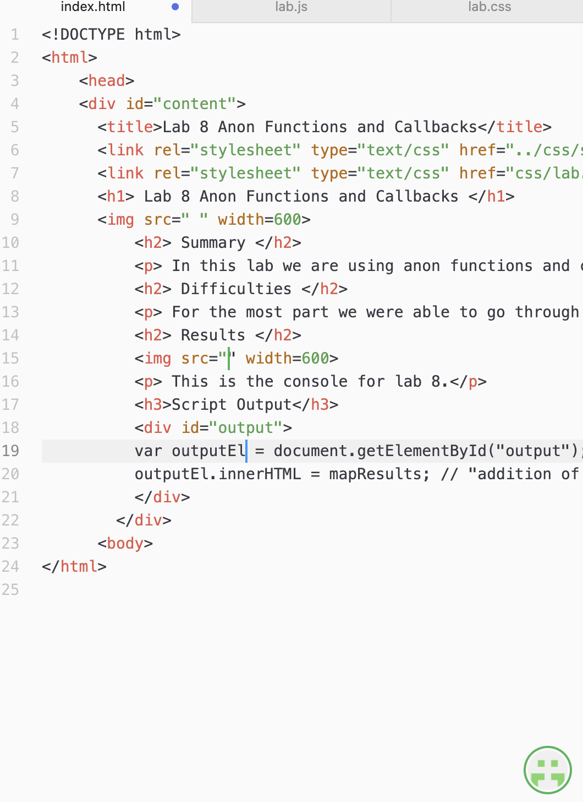
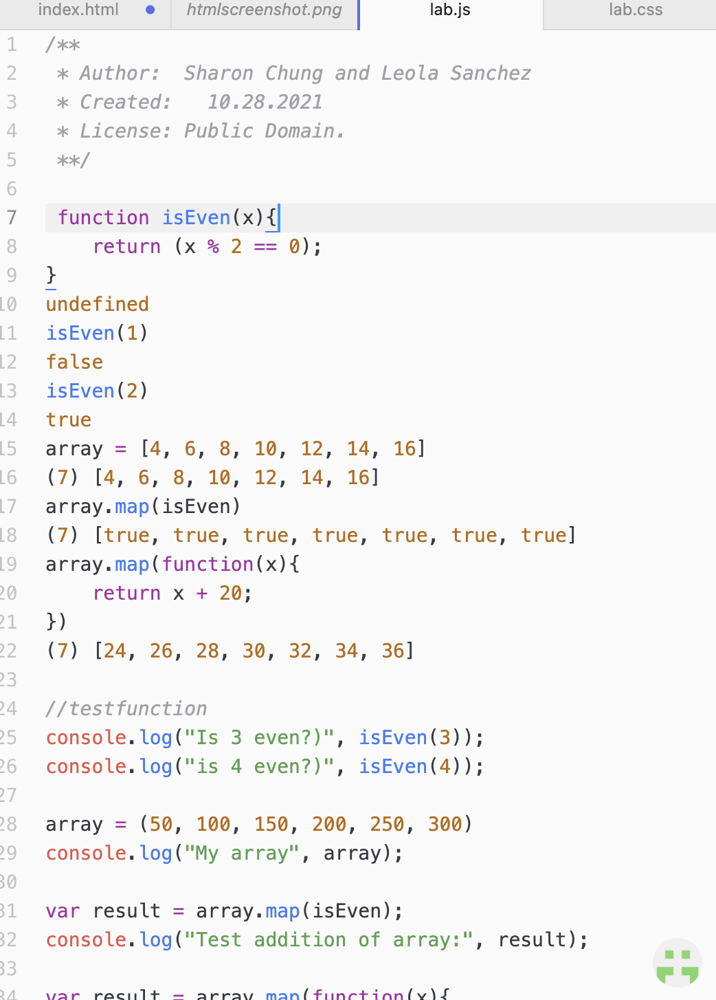

Lab 8 Anon Functions and Callbacks
Summary
In this lab we are using anon functions and callback functions. The main goal is to demonstrate our new knowledge of callbacks in Javascript and as well as our website.
Difficulties
For the most part we were able to go through the code fairly easily. Everything worked in our consoles when we tested the callback function. The main difficulty that we had was actually linking the javascript to the html. To answer the first question in task X, no, you cannot just simply put in that code in the html. We think that this is partly because the script uses var which declares variables and that isn't something you can put in a html.
Results
 Script Output
var outputEl = document.getElementById("output");
outputEl.innerHTML = mapResults; // "addition of array"